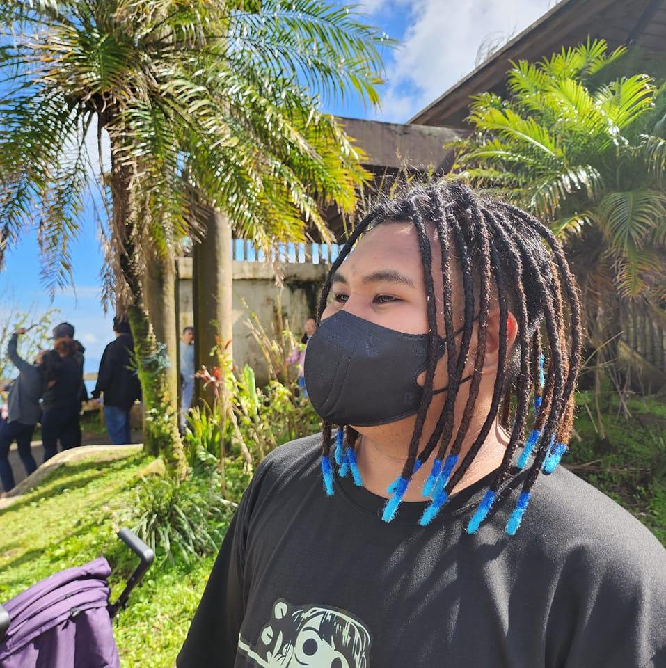

Who is Jhoven?
My name is Jhoven Fajardo, a passionate individual who enjoys playing online games like Valorant, riding bikes, and watching anime. This website is a personal project of mine to showcase my interests, hobbies, and to connect with like-minded individuals.
- Online Gaming: Avid player of Valorant, with a rank of Diamond. I enjoy the strategy and teamwork involved.
- Biking: I often go on long bike rides during the weekends, exploring new trails and enjoying nature.
- Watching Anime: My favorites include 'Attack on Titan' and 'My Hero Academia'. I appreciate the storytelling and art style of anime.
- Web Development: I have a passion for creating websites and applications. This site is one of my personal projects.
- Community Involvement: Active member of local gaming and cycling communities, participating in events and competitions.